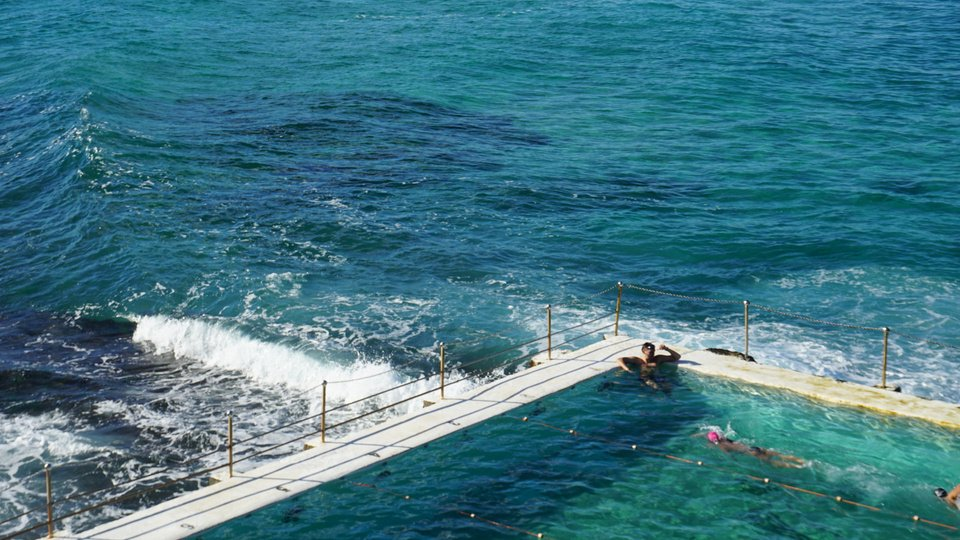
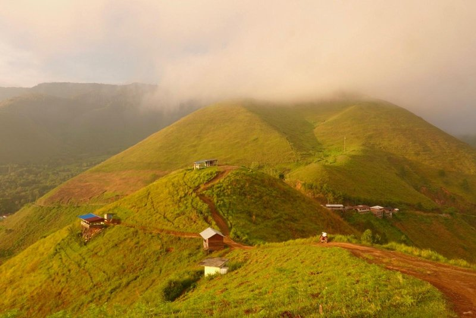
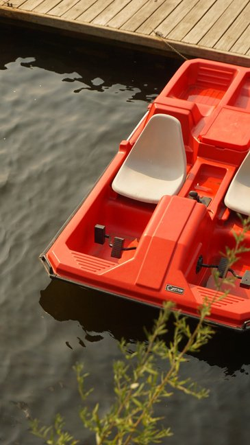
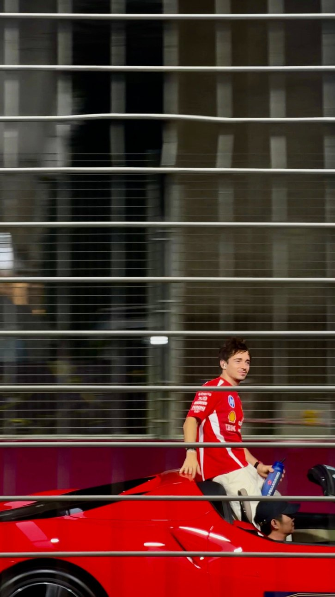
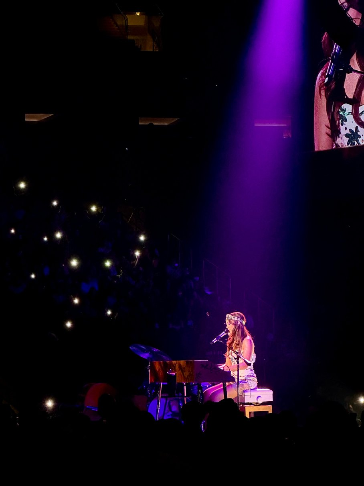
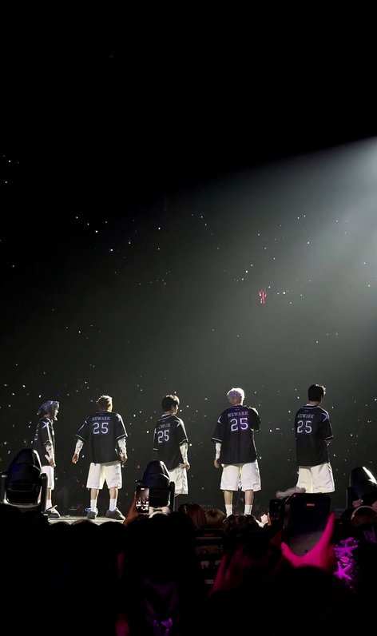
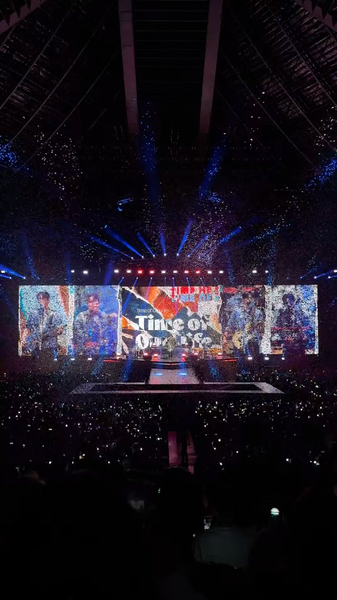

Photography & collage
Collecting Experiences
I keep something from every place I visit and every experience I live.
- Project
- Personal project
- 2019 – present
Collecting
Postcards, stickers and tickets from every trip end up on my wall, so the places I’ve been stay part of my everyday.

Photography
I like to capture the little quirks of nature and living things in motion, and make time stop for a moment.
Shot on iPhone 14 Pro and Sony a6400.







